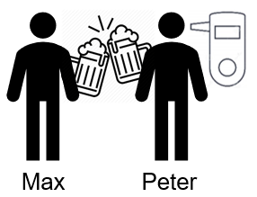
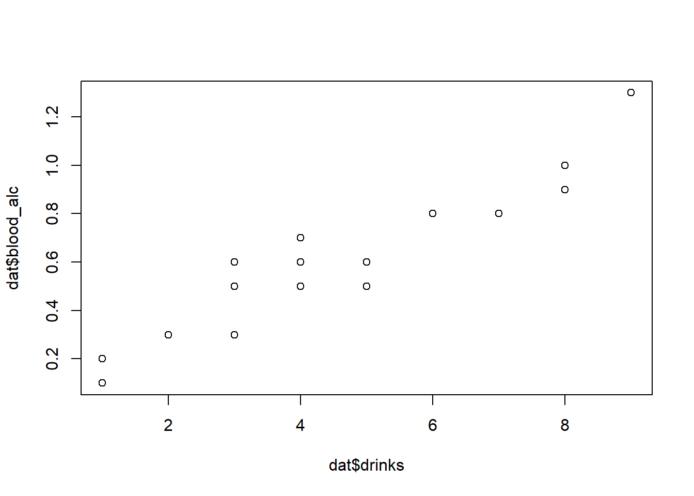
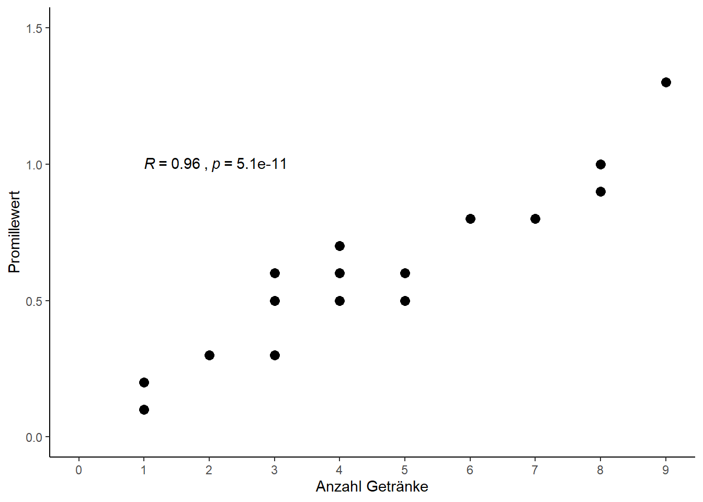
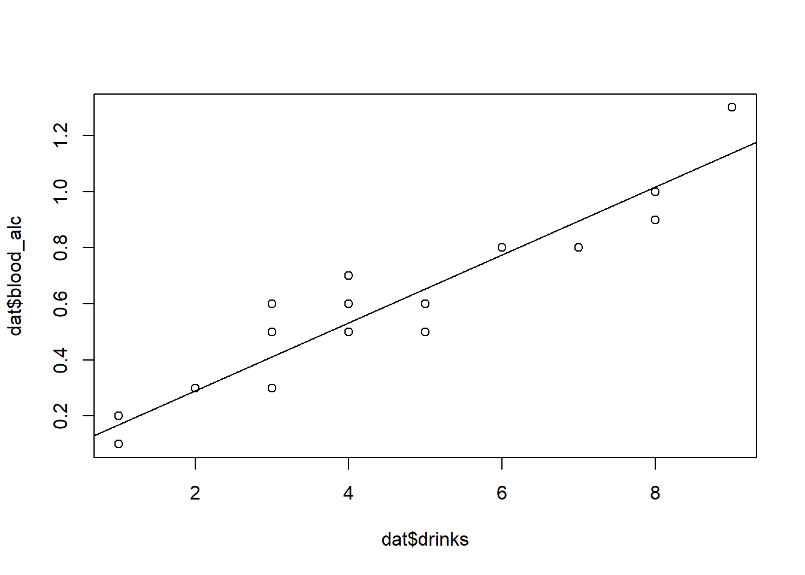
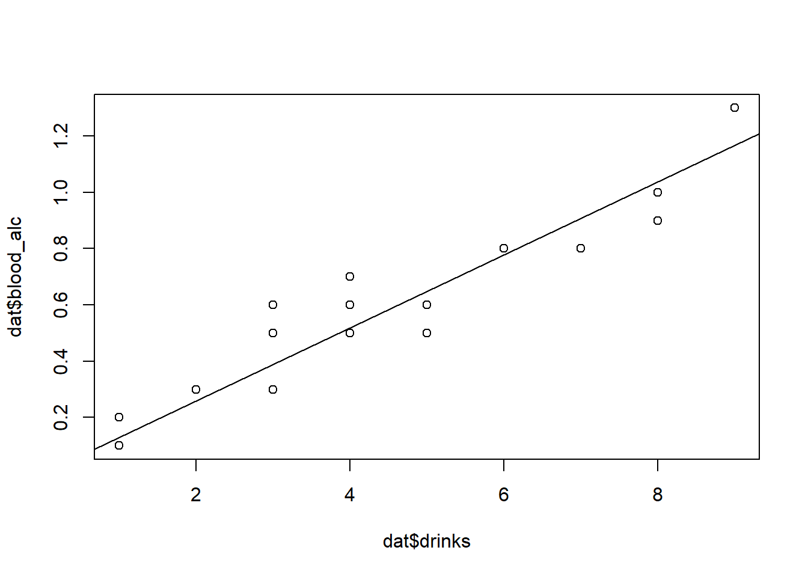
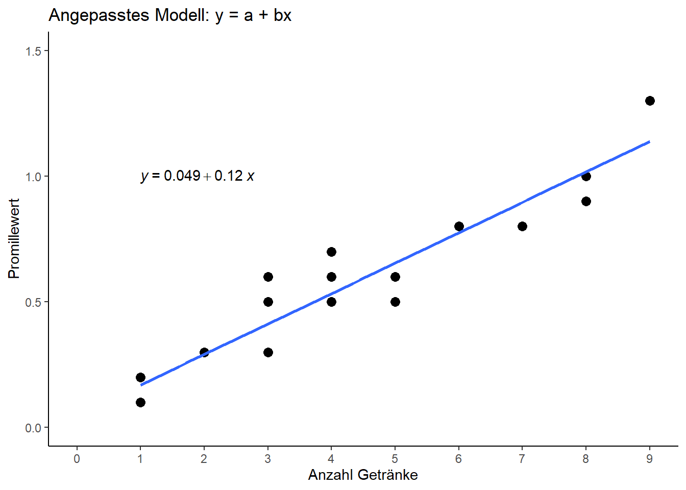
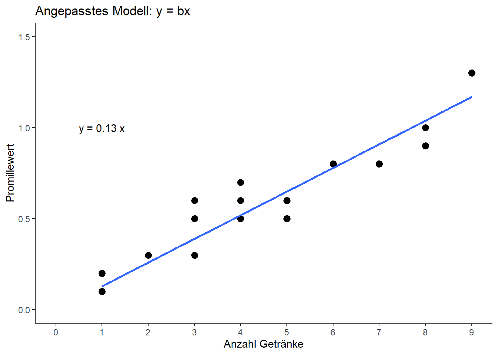

In diesem Beispiel haben Peter und Max an mehreren Abenden aufgeschrieben wie viele Getränke sie getrunken haben und was für einen Promillewert sie am Ende des Abends hatten. Demnach haben wir einen Datensatz mit u.a. zwei numerischen Spalten/Variablen:
head(dat) # Erste Zeilen des Datensatzes## Person drinks blood_alc
## 1: Max 1 0.2
## 2: Max 2 0.3
## 3: Max 3 0.5
## 4: Max 3 0.6
## 5: Max 4 0.6
## 6: Max 4 0.5str(dat) # Struktur des Datensatzes## Classes 'data.table' and 'data.frame': 20 obs. of 3 variables:
## $ Person : Factor w/ 2 levels "Max"..
## $ drinks : int 1 2 3 3 4 4 4 5 7 8..
## $ blood_alc: num 0.2 0.3 0.5 0.6 0.6..
## - attr(*, ".internal.selfref")=<exter..Wir könnten nun verschiedene Fragen an diesen Datensatz stellen. Wir könnten z.B. fragen wer im Schnitt mehr drinks hatte (siehe dazu das Kapitel zum Erstellen deskriptiver Statistiken). In diesem Kapitel wollen wir uns allerdings ausschließlich auf die beiden numerischen Variablen konzentrieren, nämlich drinks und blood_alc, also die Anzahl Getränke und den Promillewert. Wir ignorieren dabei komplett ob ein Wert von Peter oder Max kommt.
Demnach lautet unsere Frage in etwa: Wie hängt der Promillewert mit der Anzahl Getränken zusammen? und diese Frage beantworten wir in diesem Kapitel auf verschiedene Arten.
Um ein Gefühl für die Daten zu bekommen, betrachten wir einige Kennzahlen zu den Daten, sowie einen Plot.
summary(dat)## Person drinks blood_alc
## Max :10 Min. :1.00 Min. :0.100
## Peter:10 1st Qu.:1.00 1st Qu.:0.200
## Median :3.50 Median :0.500
## Mean :3.85 Mean :0.515
## 3rd Qu.:5.25 3rd Qu.:0.725
## Max. :9.00 Max. :1.300plot(x=dat$drinks, y=dat$blood_alc)
Wir erkennen also schon jetzt in welchen Bereichen sich die Werte bewegen und, dass es einen Trend zu geben scheint: Je mehr Getränke eine Person hatte, desto höher war ihr Promillewert.
Um solch eine Beziehung zwischen zwei numerischen Variablen in Zahlen ausdrücken zu können, eignet sich die Korrelation - Hier eine kurze Zusammenfassung was Korrelation ist. Um einfach nur die geschätzte Korrelation zu erhalten reicht der Befehl cor(), für einen umfangreicheren Output nehmen wir cor.test():
cor(dat$drinks, dat$blood_alc)## [1] 0.9559151cor.test(dat$drinks, dat$blood_alc)##
## Pearson's product-moment correlation
##
## data: dat$drinks and dat$blood_alc
## t = 13.811, df = 18, p-value = 5.089e-11
## alternative hypothesis: true correlation is not equal to 0
## 95 percent confidence interval:
## 0.8897837 0.9827293
## sample estimates:
## cor
## 0.9559151Wir finden also eine geschätzten Korrelationskoeffizient \(r \approx\) 0.96, also eine hohe, positive Korrelation. Das Ergebins passt zu unserem Plot. Auch wenn das Ergebnise in diesem Fall recht klar ist, wollen wir noch prüfen ob die Korrelation signifikant ist. (Siehe das Kapitel zur Korrelation um zu verstehen was genau das bedeutet). Wie wir im Output sehen ist der p-Wert \(=\) 5.089e-11 \(< 0.0001\) und demnach ist die Korrelation signifikant (von Null verschieden). Dies wäre in vielen Fällen bereits alles was bzgl. der Korrelation verlangt bzw. gezeigt wird. Als Ergebnissatz würde z.B. geschrieben werden
“Es wurde eine signifikante (p = 5.09 10^(-11) < 0.0001) Korrelation r=0.96 zwischen dem Promillewert und der Anzahl Getränke gefunden.”
Oft unterbewertet wird m.E. außerdem die Information zum 95% Konfidenzintervall, welches hier von 0.89 bis 0.98 reicht. Desweiteren findet man das Ergebnis zusätzlich direkt im Plot abgebildet, weswegen wir hier zum Abschluss einen etwas schöneren Plot samt Ergebnis mit ggplot2 und ggpubr erstellen wollen.
library(ggplot2) # Erzeugt Plot
library(ggpubr) # Zusätzlicher Befehl "stat_cor" (siehe unten)ggplot(data=dat, aes(x=drinks, y=blood_alc)) + # Definiere Daten
geom_point(size=3) + # Scatter plot mit Punkten der Größe 3
scale_x_continuous(name="Anzahl Getränke", limits=c(0, 9), breaks=seq(0, 9, by=1)) + # x-Achse
scale_y_continuous(name="Promillewert", limits=c(0, 1.5)) + # y-Achse
theme_classic() + # Simple, klassische Formatierung
stat_cor(method="pearson", label.x=1, label.y=1) # Füge Korrelation mit p-Wert ein
Neben der Korrelation können noch andere statistische Methoden angewendet werden um die Beziehung zwischen zwei numerischen Variablen besser fassen zu können. Eine dieser Methoden ist die Regression und in diesem Fall genauer: die simple lineare Regression - Hier eine kurze Zusammenfassung was eine Regression ist.
reg <- lm(data = dat, formula = blood_alc ~ drinks) # Regressionsmodell y = a + bxreg # Zeige Ergebnisse (kompakt)##
## Call:
## lm(formula = blood_alc ~ drinks, data = dat)
##
## Coefficients:
## (Intercept) drinks
## 0.04896 0.12105plot(x=dat$drinks, y=dat$blood_alc) # Wie oben
abline(reg) # Füge Regressionslinie hinzu
summary(reg) # Zeige Ergebnisse (detailliert)##
## Call:
## lm(formula = blood_alc ~ drinks, data = dat)
##
## Residuals:
## Min 1Q Median 3Q Max
## -0.154206 -0.070011 -0.004206 0.039202 0.187891
##
## Coefficients:
## Estimate Std. Error t value Pr(>|t|)
## (Intercept) 0.048963 0.040592 1.206 0.243
## drinks 0.121049 0.008764 13.811 5.09e-11 ***
## ---
## Signif. codes: 0 '***' 0.001 '**' 0.01 '*' 0.05 '.' 0.1 ' ' 1
##
## Residual standard error: 0.1009 on 18 degrees of freedom
## Multiple R-squared: 0.9138, Adjusted R-squared: 0.909
## F-statistic: 190.8 on 1 and 18 DF, p-value: 5.089e-11Die Schätzer für die Regressionskoeffizienten sind also \(a=\) 0.0489627 und \(b=\) 0.1210487, sodass unser Regressionsmodell lautet:
\[ bloodalc = 0.05 + 0.12 drinks \]
Die Werte erscheinen stimmig und auch die dementsprechend eingezeichnete Regressionsgerade scheint gut in den Plot zu passen. Bevor wir uns aber den weiteren Output genauer anschauen sollte sich genauer angeschaut werden was dieses Modell für die Praxis bedeutet. Speziell die Frage “Was passiert, wenn jemande kein Alkohol getrunken hat?” führt hier nämlich zu Probleme, da wir eine Promillewert-Vorhersage von 0.05 erhalten, wenn wir 0 drinks einsetzen.
Wo liegt hier also das Problem? Vorneweg: Der R-Code stimmt und R selbst hat sich auch nicht verrechnet: Die Statistik stimmt auch. Wenn hier etwas als falsch angesehen werden kann, dann ist es nicht die Antwort, die R uns gegeben hat, sondern die Frage, die wir an R gestellt haben. Mit dem lm() Befehl oben haben wir nach einer klassischen Regressionsgeraden mit Achsenabschnitt \(a\) und Steigung \(b\) gefragt. Tatsächlich wussten wir als Anwender aber bereits, dass es keinen Achsenabschnitt geben kann, da kein Alkohol im Blut sein sollte, wenn kein Alkohol aufgenommen wurde. Der Grund warum dennoch ein Achsenabschnitt geschätzt wurde ist lediglich, dass die Messwerte nicht so präzise waren, dass \(a\) auch wirklich auf genau 0.0 geschätzt wurde. Das wird in der Regel auch niemals so sein. Schauen wir uns den Output genauer an, realisieren wir auch, dass zum einen \(a=0.049\) nahe 0 ist und zum anderen, dass der Schätzer einen p-Wert von 0.243 hat, also >0.05 und demnach nicht signifikant von 0 verschieden. Locker gesagt hat also sogar R bzw. die Statistik uns darauf hingewiesen, dass hier in Wahrheit gar keinen Achsenabschnitt gibt.
Wir wollen nun also eine neue Regression anpassen, allerdings die Sonderform \(y=bx\) , also ohne Achsenabschnitt. Dazu müssen wir lediglich 0 + ins Modell an die Stelle schreiben, an der R sonst quasi standardmäßig einen Achsenabschnitt anpasst:
reg_bx <- lm(data = dat, formula = blood_alc ~ 0 + drinks) # Regressionsmodell y = bxreg_bx # Zeige Ergebnisse (kompakt)##
## Call:
## lm(formula = blood_alc ~ 0 + drinks, data = dat)
##
## Coefficients:
## drinks
## 0.1298plot(x=dat$drinks, y=dat$blood_alc) # Wie oben
abline(reg_bx) # Füge Regressionslinie hinzu
summary(reg_bx) # Zeige Ergebnisse (detailliert)##
## Call:
## lm(formula = blood_alc ~ 0 + drinks, data = dat)
##
## Residuals:
## Min 1Q Median 3Q Max
## -0.149184 -0.041317 0.000816 0.072786 0.210490
##
## Coefficients:
## Estimate Std. Error t value Pr(>|t|)
## drinks 0.12984 0.00493 26.34 <2e-16 ***
## ---
## Signif. codes: 0 '***' 0.001 '**' 0.01 '*' 0.05 '.' 0.1 ' ' 1
##
## Residual standard error: 0.1021 on 19 degrees of freedom
## Multiple R-squared: 0.9733, Adjusted R-squared: 0.9719
## F-statistic: 693.7 on 1 and 19 DF, p-value: < 2.2e-16Gleich sieht man, dass im Output kein Intercept, also kein Achsenabschnitt mehr auftaucht. Außerdem ist der Schätzer für die Steigung ein kleines bisschen größer geworden und auch die eingezeichnete Gerade hat sich ein wenig verschoben. Dies sind nun also die Ergebnisse, die zwar statistisch genau so korrekt sind wie die vorangegangenen, die aber biologisch mehr Sinn ergeben.
Zum Abschluss wollen wir auch für die Regressionsergebnisse einen Plot mit ggplot() erstellen:
ggplot(data=dat, aes(x=drinks, y=blood_alc)) + # Definiere Daten
ggtitle("Angepasstes Modell: y = a + bx") + # Titel über Plot
geom_point(size=3) + # Scatter plot mit Punkten der Größe 3
scale_x_continuous(name="Anzahl Getränke", limits=c(0, 9), breaks=seq(0, 9, by=1)) + # x-Achse
scale_y_continuous(name="Promillewert", limits=c(0, 1.5)) + # y-Achse
theme_classic() + # Simple, klassische Formatierung
geom_smooth(method='lm', formula=y~x, se=FALSE ) + # Füge Gerade ein
stat_regline_equation(label.x=1, label.y=1) # Füge Gleichung ein
ggplot(data=dat, aes(x=drinks, y=blood_alc)) + # Definiere Daten
ggtitle("Angepasstes Modell: y = bx") + # Titel über Plot
geom_point(size=3) + # Scatter plot mit Punkten der Größe 3
scale_x_continuous(name="Anzahl Getränke", limits=c(0, 9), breaks=seq(0, 9, by=1)) + # x-Achse
scale_y_continuous(name="Promillewert", limits=c(0, 1.5)) + # y-Achse
theme_classic() + # Simple, klassische Formatierung
geom_smooth(method='lm', formula=y~0+x, se=FALSE ) + # Füge Gerade ein
# Füge Gleichung manuell ein, ohne ggpubr package
annotate("text", x=1, y=1, label=paste("y =", round(reg_bx$coefficients,2), "x")) 